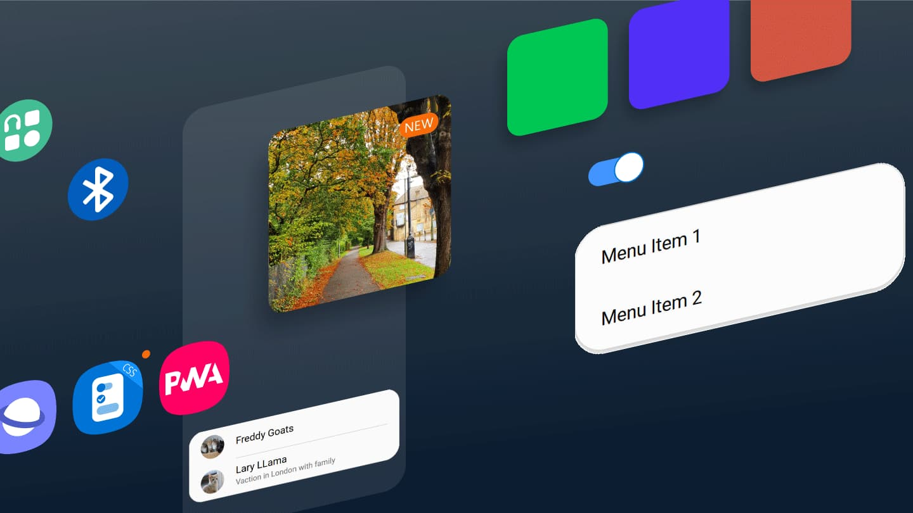

One UI CSS
To rule them all
One UI helps you focus on what really matters to you. We're bringing this concept to every screen possible in a modern, open and acessible way by using Web technologies.
Built on Web technologies
All you need is a modern browser. One UI CSS was built using state of the art CSS Custom Properties, CSS imports and features a modern approach tested in major browsers.

Enhanced with accessibility in mind
It's all the goodness of One UI made webby. This means we've tweaked some controls to adapt them to the web platform, focusing on accessibility and progressive enhancement.

All screens invited
Create web applications that run on phones, tablets, desktops... or any device that supports a modern browser.

Endless customization
CSS custom properties allow easy creation of themes to match your brand, and coupled with an open implementation, leverage endless customization to create your own version of One UI on the web.

Open to all
One UI CSS is open source. We want to leverage the power of open initiatives to take One UI to places it hasn't been before, all powered by your contributions and ideas.